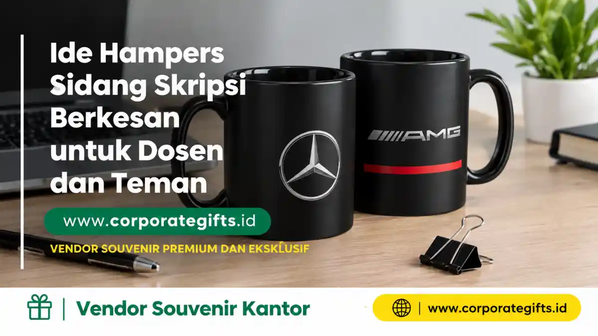

Corporate Gifts ID - Hampers sidang skripsi adalah hadiah istimewa yang diberikan mahasiswa kepada dosen pembimbing, teman seperjuangan, maupun diri sendiri setelah tahapan ujian skripsi selesai, sebagai bentuk apresiasi tulus dan perayaan atas keberhasilan akademik. Pilihan terbaik mencakup tumbler stainless custom dan notebook agenda kulit premium untuk dosen, snack box serta buket bunga kering untuk rekan satu bimbingan, dan paket self-care untuk diri sendiri, dengan kisaran harga terjangkau mulai dari Rp100.000 hingga Rp350.000.
Hari sidang skripsi menjadi momen yang paling ditunggu sekaligus menegangkan bagi setiap mahasiswa. Setelah berbulan-bulan berjuang menyelesaikan riset, revisi metodologi, dan pengolahan data, hari itu adalah simbol perjuangan dan pintu gerbang menuju gelar sarjana.
Untuk merayakan momen krusial tersebut, tren memberikan hampers sidang kini semakin diminati. Namun, memilih hampers yang tepat memerlukan pertimbangan matang agar hadiah yang diserahkan tetap sopan, sarat makna, dan memiliki nilai estetika tinggi.
Poin Kunci Kurasi Hampers Sidang Skripsi:
- Waktu Penyerahan Etis: Berikan hadiah hanya setelah sidang dan yudisium selesai untuk menjaga objektivitas akademik.
- Segmentasi Penerima: Sesuaikan karakteristik isi antara hadiah formal untuk dosen pembimbing dengan bingkisan santai untuk rekan mahasiswa.
- Nilai Fungsional Jangka Panjang: Utamakan barang-barang berfaedah seperti tumbler vakum, agenda kerja, atau set aromaterapi relaksasi.
- Kemasan Hardbox Rapi: Penggunaan gift box kokoh dengan pita satin dan greeting card personal menaikkan citra eksklusivitas hampers.
Arti dan Makna Memberikan Hampers Saat Sidang Skripsi
Pemberian hampers saat momentum sidang skripsi bukan sekadar mengikuti tren seremonial semata, melainkan simbol penghargaan mendalam atas peran orang-orang yang membersamai proses akademik:
- Untuk Dosen Pembimbing: Menjadi wujud penghormatan, terima kasih atas dedikasi waktu, arahan keilmuan, dan kesabaran beliau selama proses bimbingan.
- Untuk Teman Seperjuangan: Simbol solidaritas, saling menguatkan saat revisi larut malam, serta perayaan pencapaian bersama.
- Untuk Diri Sendiri (Self-Reward): Pengingat nyata atas resiliensi mental dan hasil kerja keras yang telah berhasil dituntaskan.
Catatan Etika Penting: Waktu terbaik untuk memberikan hampers kepada dosen penguji maupun pembimbing adalah setelah sidang dinyatakan selesai dan nilai telah diumumkan, guna menghindari persepsi konflik kepentingan atau pelanggaran kode etik akademik.
Rekomendasi Jenis Hampers Sidang Skripsi Berdasarkan Penerima
Agar bingkisan yang Anda persiapkan tepat guna dan meninggalkan impresi yang berkesan, berikut kurasi ide hampers berdasarkan kelompok penerimanya:
1. Hampers Elegan untuk Dosen Pembimbing
Untuk dosen pembimbing, pilih hampers dengan tampilan elegan, bernuansa formal, dan berisi perlengkapan kerja yang bermanfaat. Rekomendasi terbaik:
- Tumbler stainless steel tahan panas dengan grafir laser nama dan gelar dosen.
- Notebook agenda kulit premium untuk mencatat agenda riset atau rapat perkuliahan.
- Set pulpen metal eksklusif dalam wadah gift box magnetik.
- Lilin aromaterapi handmade atau essential oil diffuser untuk menghadirkan suasana ruang kerja yang tenang.
Sertakan kartu ucapan dengan pesan tulus, misalnya:
"Terima kasih yang sebesar-besarnya atas bimbingan, kesabaran, dan ilmu yang Bapak/Ibu berikan selama proses penyusunan skripsi saya. Semoga Bapak/Ibu senantiasa dianugerahi kesehatan dan kesuksesan."
Gunakan kemasan bernuansa warna formal seperti navy blue, emerald green, maroon, atau gold berpadu pita satin untuk tampilan profesional berkelas.

Pilihan gift box hampers sidang skripsi dengan hardbox kustom, pita premium, dan kombinasi produk fungsional harian.
2. Hampers Kreatif untuk Teman Satu Bimbingan
Bagi sahabat seperjuangan bimbingan, kemasan dan isi hampers bisa dirancang lebih santai, ceria, dan personal:
- Snack Box Artisan: Aneka cokelat artisan, cookies premium, atau kudapan favorit untuk menemani perayaan santai.
- Mug Keramik Custom: Mug berdesain kutipan motivasi lucu seputar perjuangan bab 4 dan revisi dosen.
- Buket Bunga Kering (Dried Flowers): Bunga abadi sebagai simbol ketulusan persahabatan dan ketekunan yang tak layu.
- Pouch Kanvas & Aksesoris Meja: Tempat alat tulis atau organizer simpel yang praktis dibawa.
3. Hampers Self-Reward untuk Diri Sendiri
Setelah melewati malam-malam panjang dengan mata lelah dan beban pikiran menyusun naskah tugas akhir, Anda sangat layak memberikan apresiasi untuk diri sendiri:
- Paket self-care berisi body care, masker aromaterapi, scented candle, dan jurnal pribadi.
- Frame pigura foto kenangan bersama tim pembimbing dan sahabat terdekat saat presentasi sidang.
- Merchandise impian yang sebelumnya ditunda demi fokus menyelesaikan tugas akhir.
Tabel Matriks Pilihan Hampers Sidang & Estimasi Biaya
Berikut rangkuman opsi paket hampers sidang skripsi beserta estimasi bujet dan karakteristik peruntukannya:
| Jenis Paket Hampers | Kombinasi Item Utama | Target Penerima | Kesan & Keunggulan | Estimasi Biaya |
|---|---|---|---|---|
| Executive Lecturer Set | Tumbler SUS304 + Pen Metal + Agenda Kulit | Dosen Pembimbing & Penguji | Formal, fungsional, dan berkelas tinggi | Rp200.000 - Rp350.000 |
| Aroma & Wellness Gift | Scented Candle + Reed Diffuser + Cangkir Keramik | Dosen Pembimbing / Diri Sendiri | Menenangkan suasana kerja, estetis | Rp150.000 - Rp275.000 |
| Sweet Celebration Box | Artisan Cookies + Mini Dried Flowers + Custom Mug | Teman Satu Tim Bimbingan | Ceria, penuh kebersamaan, hangat | Rp100.000 - Rp180.000 |
| Smart Stationery Kit | Notebook A5 + Flashdisk Kartu + Totebag Kanvas | Teman / Wisudawan Baru | Mendukung persiapan masuk dunia kerja | Rp120.000 - Rp220.000 |
| Ultimate Self-Care Box | Skincare Set + Bath Salt + Frame Foto Sidang | Diri Sendiri (Self-Reward) | Relaksasi total setelah lelah revisi | Rp150.000 - Rp300.000 |
Tips Memilih dan Mengemas Hampers Sidang Skripsi yang Elegan
Kesan pertama hampers ditentukan dari kerapian visual luar dan pemilihan isi di dalamnya. Perhatikan beberapa kiat praktis berikut:
- Pilih Warna Kemasan Netral dan Mewah: Palet warna seperti navy, emerald green, beige, gold, atau black matte memberikan sentuhan eksklusif yang tidak mencolok.
- Sertakan Kartu Ucapan Bertuliskan Tangan: Tambahkan kartu ucapan dengan pesan personal yang spesifik agar hadiah terasa tulus dan menyentuh hati.
- Hindari Barang Terlalu Privat untuk Dosen: Jauhi hadiah seperti baju, parfum bernorma wangi tajam, atau perhiasan mahal agar tetap sejalan dengan norma kesopanan akademik.
- Gunakan Hardbox Kokoh Berkualitas: Box karton rigid atau besek anyaman modern berpelindung shredded paper melindungi produk selama pengantaran.
Keuntungan Memesan Hampers Custom di Vendor Resmi
Mempercayakan pengadaan paket hampers kepada vendor profesional berbadan hukum resmi memberikan berbagai keuntungan konkret:
- Kustomisasi Penuh (Bespoke): Anda bebas memilih paduan produk, warna pita, cetak nama grafir laser pada tumbler, hingga custom printing cover notebook.
- Kemudahan Pemesanan Satuan maupun Kolektif: Layanan melayani pesanan kado personal untuk dosen hingga pengadaan ratusan paket serentak untuk angkatan wisuda.
- Jaminan Kualitas & Pengiriman Tepat Waktu: Seluruh paket dirakit dengan standar QC ketat sehingga sampai dalam kondisi prima sebelum jadwal sidang dimulai.
Pertanyaan Seputar Hampers Sidang Skripsi (FAQ)
Kesimpulan dan Konsultasi Pemesanan
Hampers sidang skripsi bukan sekadar hadiah seremonial, melainkan jembatan ungkapan rasa terima kasih dan perayaan atas dedikasi panjang menuju kelulusan. Baik untuk dosen pembimbing, sahabat seperjuangan, maupun diri sendiri, bingkisan yang dikemas dengan apik akan selalu dikenang sebagai memori membanggakan.
Kunci utamanya terletak pada pemilihan item yang berfaedah, sopan, dan berbalut kemasan rapi. Temukan koleksi hampers dan gift set eksklusif di CorporateGifts.ID melalui katalog hampers dan parcel resmi kami atau konsultasikan paket pesanan Anda melalui formulir permintaan penawaran resmi.